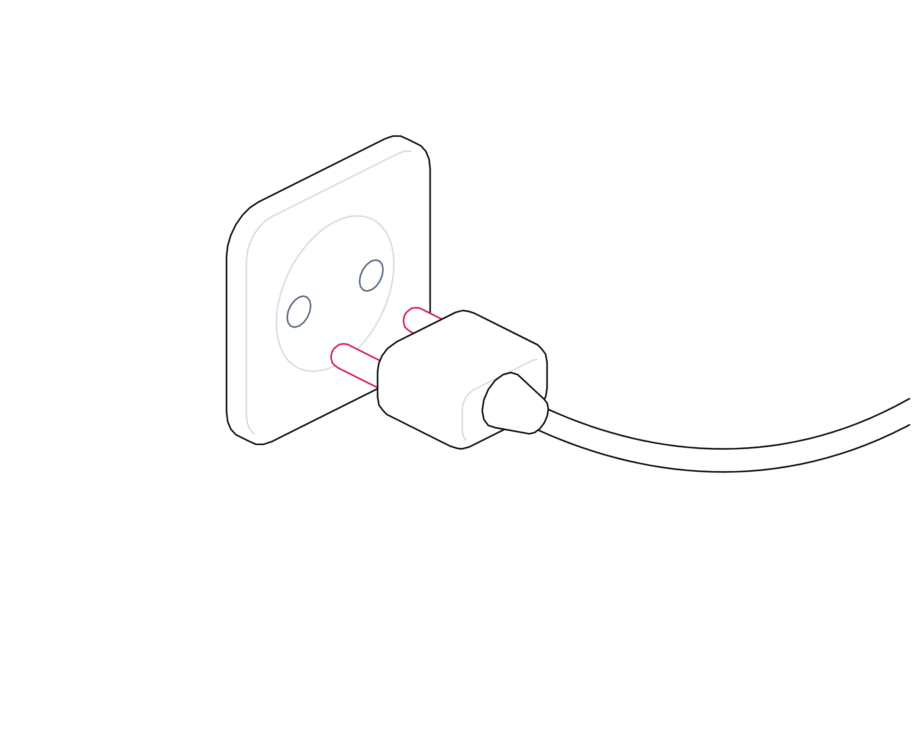

Resilience, Regulated
Intelligence report · No. 01
Incident management guide
Financial Services and Insurance · Operational resilience
Resilience,
regulated.
Regulators in the UK, the US, the EU and the Gulf now ask firms to prove their critical services survive severe disruption. A six-hour cloud outage in London put that to the test. What the evidence shows, and what financial firms everywhere should do.
Evidence-based · Every figure sourcedwww.crises-control.com
Inside
Contents
An evidence-based look at operational resilience regulation for banks, insurers, payment and investment firms in the UK, the US, the EU and the Middle East: what the rules require, what the 20 October 2026 cloud outage revealed, and what boards should do next.
Executive summary03
Key findings04
01The rules07
02The outage13
03What to do18
Coordination, use cases, readiness and buyer's guide23
Sources28
CRISES CONTROLContents
Resilience, Regulated · Crises Control · Financial Services and Insurance02 / 30
Executive summary
The rules now assume disruption will happen. The question is whether firms can prove they stay within tolerance.
On 20 October 2026 a power failure at a data centre hosting europe-west2-b, one of Google Cloud's London zones, disrupted services across the region for six hours and eight minutes, according to Google's final incident report.1 Customers of Lloyds, HSBC and Revolut reported problems with apps, payments and cash withdrawals.2,3
The outage landed in a UK regime that had just matured. Since 31 March 2025 UK banks, insurers, payment firms and other in-scope firms have been expected to remain within impact tolerances for each important business service.4 In July 2026 HM Treasury designated Google Cloud EMEA, Amazon Web Services EMEA, Microsoft Ireland Operations and Oracle Corporation UK as critical third parties.5 From 18 March 2027 new FCA and PRA incident and third-party reporting rules apply.6,7
The UK FCA's review of 2025 self-assessments found progress, but also communications strategies rarely tested in exercises and few workarounds for losing usual channels.8 Its own data shows retail banks reported 446 major operational incidents in 2025.9
The same question is being asked elsewhere. The EU's DORA has applied since 17 January 2025,10 US banking agencies ask the largest banks to set a tolerance for disruption,11 and the UAE Central Bank's operational risk regulation took effect on 14 September 2026.12 This report sets out what the rules require, what the outage shows and what boards should ask for.
The bottom line
Oversight of cloud providers does not move responsibility. Each firm must still show, with evidence, that its important business services stay within tolerance when a critical supplier fails, and that it can reach staff, customers and supervisors when its usual channels are down.
CRISES CONTROLExecutive summary
Resilience, Regulated · Crises Control · Financial Services and Insurance03 / 30
Key findings
Seven things the evidence tells us
01
The UK deadline has passed. Supervisors now want evidence.
UK firms had until 31 March 2025 to be able to remain within tolerance. The FCA is now reviewing annual self-assessments and questioning claims not backed by severe testing.4,8
02
Communications are a weak link.
The UK FCA found limited evidence that communications strategies are tested in scenario exercises, and little detail on workarounds when usual channels are unavailable.8
03
A zone failure became a regional problem.
Google reports that demand surges on neighbouring zones and control plane dependencies spread impact beyond europe-west2-b.1
04
Redundancy failed in combination.
One utility feed was out for repairs, the other failed, and a control system fault stopped generators starting before batteries ran out.1
05
Concentration is now overseen, but responsibility is not transferred.
UK regulators say firms remain responsible for managing their own third-party arrangements under the critical third parties regime.13
06
Reporting clocks are measured in hours.
DORA sets 4 and 24 hours; the UAE Central Bank 4 hours; US banks 36 hours; from March 2027 most UK FCA firms 24 hours.6,12,14,15
07
IT failures are routine, not rare.
UK retail banks reported 446 major operational incidents to the FCA in 2025, led by change management and third-party failure.9
CRISES CONTROLKey findings
Resilience, Regulated · Crises Control · Financial Services and Insurance04 / 30
At a glance
Operational resilience in six figures
Each figure is sourced. Where sources measure different things, we say so in the analysis that follows.
6h 08m
Duration of the main impact across Google Cloud's London region on 20 October 2026.1
38
Google Cloud products listed as affected on the incident's status page.1
446
Major operational incidents reported to the UK FCA by retail banks in 2025.9
803 hours
Unplanned outages at nine major UK banks and building societies, January 2023 to February 2025.16
Over 40%
Share of cyber incidents reported to the UK FCA in 2025 that involved a third party.17
4
Cloud providers designated as UK critical third parties by HM Treasury, effective 13 July 2026.5,18
CRISES CONTROLAt a glance
Resilience, Regulated · Crises Control · Financial Services and Insurance05 / 30
Timeline
From policy to a real test
Key dates in operational resilience regulation across four regions, and the October 2026 outage.
30 October 2020
US sound practices
The Federal Reserve, OCC and FDIC publish sound practices for operational resilience at the largest banks.11
29 March 2021
UK rules published
The FCA publishes PS21/3 and the PRA SS1/21. Rules apply from 31 March 2022.4,19
18 December 2023
US cyber disclosure
Listed companies begin disclosing material cyber incidents on Form 8-K Item 1.05.20
17 January 2025
DORA applies
EU financial entities must report major ICT-related incidents under DORA.21
31 March 2025
UK transition ends
UK firms must be able to remain within impact tolerances for each important business service.4
18 November 2025
EU names critical providers
The European Supervisory Authorities designate critical ICT providers, including Google Cloud EMEA.22
18 March 2026
UK reporting rules final
FCA PS26/2 and PRA PS7/26 set incident and third-party reporting rules, applying from 18 March 2027.6,7
13 July 2026
First UK designations
AWS, Google Cloud, Microsoft and Oracle come under direct oversight.5,18
14 September 2026
UAE regulation in force
The UAE Central Bank's Operational Risk Management Regulation takes effect for licensed financial institutions.12
20 October 2026
London cloud outage
A power failure in europe-west2-b disrupts services across the region; banks report customer impact.1,2
CRISES CONTROLTimeline
Resilience, Regulated · Crises Control · Financial Services and Insurance06 / 30
Part 01
The
rules.
Regulators in every major market now shape how financial firms prepare for, report and recover from disruption.
01The UK regime four years on
02One question, four regions
03Reporting clocks, region by region
CRISES CONTROLPart 01
Resilience, Regulated · Crises Control · Financial Services and Insurance07 / 30
The rules
The UK regime, four years on
Some self-assessments claimed no scenario could defeat the firm, without severe testing to prove it.
The UK approach, set out by the FCA in PS21/3 and the PRA in SS1/21, applies to banks, building societies, PRA-designated investment firms, insurers, recognised investment exchanges, enhanced scope SM&CR firms and payment and e-money firms.4 It asks each firm to identify its important business services, set an impact tolerance for each, map what supports them and test against severe but plausible scenarios.4,19
The PRA is specific about tolerances. Each must include a time metric, applies at peak times as well as normal ones, and must hold whether or not a third party delivers part of the service. The board approves the services, the tolerances and the written self-assessment.19
By 31 March 2025 firms had to have performed mapping and testing so they could remain within tolerance, and made the investments needed to operate consistently within it.4
In March 2026 the FCA published what it found in firms' self-assessments. Good practice included annual reviews, non-time metrics such as transaction volumes and testing that covers cyber attacks and third-party failures. Weaknesses included tolerances that did not separate consumer harm from market integrity, mapping focused mainly on technology, and more work to do on third-party vulnerabilities.8
On communications, the FCA restated that firms must maintain an internal and external strategy that delivers clear, timely and relevant messaging. It found limited evidence of that strategy being tested, and firms not considering in detail what to do when usual channels are unavailable.8
It also challenged confidence. Some self-assessments stated there was no scenario the firm could not recover from, without evidence from sufficiently severe testing.8
CRISES CONTROLThe rules
Resilience, Regulated · Crises Control · Financial Services and Insurance08 / 30
Regional notes
One question, four regions
Impact tolerance is a UK term. Other regulators ask a similar question in their own words. Check which regimes apply to each legal entity in your group.
Regional note · United Kingdom
FCA PS21/3 and PRA SS1/21: important business services, impact tolerances with a time metric, mapping, severe but plausible testing and a board-approved self-assessment. In force since 31 March 2022; firms had to be able to stay within tolerance by 31 March 2025.4,19
IN PRACTICE Treat the tolerance as the trigger for your top escalation level.
Regional note · United States
No single impact tolerance rule. The 2020 interagency Sound Practices ask the largest banks' boards to set a tolerance for disruption for critical operations and core business lines, without changing existing rules.11 The FFIEC Business Continuity Management booklet (2019) guides examiners.23 NYDFS Part 500 requires covered entities to keep incident response and business continuity plans, tested at least annually.24
IN PRACTICE Guidance, not law, for most firms; examiners still expect to see the evidence.
Regional note · European Union
DORA, Regulation (EU) 2022/2554, applies from 17 January 2025 to EU financial entities, including UK and US groups' EU subsidiaries: ICT risk management, ICT business continuity, resilience testing, crisis communication plans, major incident reporting and a register of ICT providers.10,21
IN PRACTICE Map important business services to DORA's critical or important functions once, for both regimes.
Regional note · Middle East
UAE: the Central Bank's Operational Risk Management Regulation (Circular 1/2026), in force from 14 September 2026: critical operations, mapping and board-approved disruption tolerances.12 Saudi Arabia: SAMA's Business Continuity Management Framework (2017): impact analysis, recovery objectives and annual testing.25 DIFC: the DFSA consulted in 2026 on impact tolerances (CP 170); proposed, not yet in force.26
IN PRACTICE Firms in financial free zones follow their own regulator's rulebook; confirm which applies.
A summary for orientation, not legal advice. Requirements depend on sector, size, licence and jurisdiction, and change over time. Confirm the current text with your legal and compliance teams.
CRISES CONTROLThe rules
Resilience, Regulated · Crises Control · Financial Services and Insurance09 / 30
At a glance
UK and EU: who must do what
A simplified summary. Read the rules themselves for scope and detail.
Regime
What it requires
Status
Operational resilience (FCA PS21/3, PRA SS1/21)
Important business services, impact tolerances, mapping, scenario testing, communications strategy, board-approved self-assessment.4,19
In force since 31 March 2022; tolerance deadline 31 March 2025.
Critical third parties
Designated providers are overseen on the critical services they provide to the sector. Firms remain responsible for their own arrangements.13
Rules from 1 January 2025; first designations from 13 July 2026.
Incident and third-party reporting (FCA PS26/2, PRA PS7/26)
One incident definition, thresholds, staged reports, notification of material third-party arrangements and an annual register.6,7
Published 18 March 2026; applies from 18 March 2027.
Current incident notification
Firms report incidents under SUP 15.3 and Principle 11. Payment service providers report major operational or security incidents within 4 hours of detection.6,9
In force now. New regime from 18 March 2027; the 4-hour PSP clock continues.
EU DORA
ICT risk management, crisis communication plans, major incident reporting, register of information on ICT providers.10,14
Applies from 17 January 2025 to EU financial entities, including UK groups' EU subsidiaries.
CRISES CONTROLThe rules
Resilience, Regulated · Crises Control · Financial Services and Insurance10 / 30
Reporting clocks
Two reporting clocks to plan for
Firms with EU entities may need to run both. Times are maximums; regulators expect reports as soon as practicable.
Stage
UK FCA, from 18 March 2027
EU DORA, now
Trigger
The incident meets one or more thresholds: intolerable consumer harm, market integrity, or safety and soundness.6
The ICT-related incident is classified as major.14
Initial report
As soon as practicable and at most within 24 hours of determining a threshold is met. Payment service providers: within 4 hours of first detecting.6
Within 4 hours of classification as major, and no later than 24 hours from becoming aware.14
Updates
Enhanced reporting firms give material updates as the incident develops.6
Intermediate report within 72 hours of the initial notification.14
Final report
Enhanced firms: within 30 working days of resolution, 60 at the latest.6
No later than one month after the latest intermediate report.14
Third parties
Notify new or significantly changed material arrangements; submit a register annually.6
Maintain a register of information on all ICT service arrangements.22
CRISES CONTROLThe rules
Resilience, Regulated · Crises Control · Financial Services and Insurance11 / 30
Regional notes
Reporting clocks, region by region
One incident can start several clocks in several jurisdictions. Some run from detection, some from a decision about severity or materiality.
Regional note · United Kingdom
Payment service providers report major operational or security incidents within 4 hours of detection. From 18 March 2027 most firms make an initial report within 24 hours of determining a threshold is met.6
IN PRACTICE Name who determines that a threshold is met; that decision starts the clock.
Regional note · United States
Banks notify their primary federal regulator within 36 hours of determining a significant computer-security incident.15 NYDFS covered entities notify within 72 hours, and within 24 hours of any extortion payment.24 Listed companies file Form 8-K Item 1.05 within four business days of determining a cyber incident is material.20
IN PRACTICE Materiality and severity decisions need owners and a record.
Regional note · European Union
DORA: initial report within 4 hours of classifying an incident as major and no later than 24 hours from awareness; intermediate within 72 hours; final within one month.14
IN PRACTICE Classification is a decision. Log who made it, and when.
Regional note · Middle East
UAE: notify the Central Bank within 4 hours of an event that significantly affects critical operations, with a summary within 24 hours.12 Saudi Arabia: report medium and high disruptive incidents to SAMA promptly, and submit a post-incident report once operations are restored.25
IN PRACTICE Keep supervisor contacts for every jurisdiction outside your normal systems.
A summary for orientation, not legal advice. Requirements depend on sector, size, licence and jurisdiction, and change over time. Confirm the current text with your legal and compliance teams.
CRISES CONTROLThe rules
Resilience, Regulated · Crises Control · Financial Services and Insurance12 / 30
Part 02
The
outage.
On 20 October 2026 one London data centre lost power. What happened next is a case study in concentration and redundancy.
01What Google's report says
02How one zone became a region
03A pattern, not a one-off
CRISES CONTROLPart 02
Resilience, Regulated · Crises Control · Financial Services and Insurance13 / 30
The outage
What happened on 20 October
The control system read live voltage on a disconnected feed and decided mains power was healthy.
Google's final incident report, published on 4 November 2026, is unusually detailed. The facility hosting europe-west2-b had two utility feeds. Feed B had been switched out for repairs after problems found in a generator load test on 14 October, so feed A carried the whole load.1
At 06:53 BST an underground cable fault outside the site cut feed A. The control system that should have started the backup generators read live voltage on the isolated feed B and concluded mains power was healthy, so it never sent the start signal. Batteries carried the load for their roughly five minutes of runtime, and at 07:00 servers, storage and network equipment in the zone lost power.1
Engineers restored power from a standby utility source by 08:20, but storage that had shut down uncleanly needed lengthy recovery. Platform services were fully available at 12:11 and most customer workloads at 13:08, six hours and eight minutes after impact began.1
The impact did not stay in one zone. Google says demand surges on the other two London zones and control plane dependencies across zone boundaries caused unexpected impact for customers running in unaffected zones or across the region.1
Customers of Revolut reported problems with card payments, transfers and cash withdrawals; Lloyds and HSBC said some customers had difficulties. Revolut said customers' money and data were safe.2,3 The FCA said it was engaging with Google, the European Banking Authority sought information, and the Treasury Committee wrote to the Bank of England and the FCA.3
Google's own action list includes a communications item: to bolster notification speed with an automated alert-to-communication mechanism. The earliest update in its published incident history is timestamped 09:35 BST, about two and a half hours after impact began.1
CRISES CONTROLThe outage
Resilience, Regulated · Crises Control · Financial Services and Insurance14 / 30
How it spread
From one feed to a whole region
The sequence as Google's incident report describes it. Times are BST on 20 October 2026.

01
Two feeds become one
Feed B is out for repairs, so feed A alone supplies the site. At 06:53 a cable fault cuts it.1
02
Generators never start
Sensors read voltage on the isolated feed, so no start signal is sent. Batteries run out and the zone goes dark at 07:00.1
03
Failover overloads neighbours
Workloads shift to the other London zones, saturating capacity and producing errors across the region.1
04
Recovery takes hours, not minutes
Power returns by 08:20, but storage recovery and controlled re-admission run until 13:08.1
CRISES CONTROLThe outage
Resilience, Regulated · Crises Control · Financial Services and Insurance15 / 30
Lessons
What failed, and the lesson for financial firms
Each failure point in Google's report has a parallel in a firm's own resilience plan.
Failure point
What Google reports
Lesson for firms
Planned maintenance
A temporary single-feed posture while repairs were made.1
Treat maintenance windows at critical suppliers as periods of higher risk, and ask to be told about them.
Untested automation
A control system misconfiguration stopped generators starting.1
Test failover end to end, including the parts you assume will work automatically.
Zone versus region
Demand surges and control plane dependencies spread impact beyond the failed zone.1
Do not assume multi-zone means resilient. Map regional dependencies and test a full regional loss.
Recovery time
Storage recovery meant hours between power returning and service.1
Set recovery assumptions from real incidents, not from supplier marketing.
Notification speed
Google lists faster automated customer notification as an action.1
Detect impact with your own monitoring. Do not wait for a status page.
CRISES CONTROLThe outage
Resilience, Regulated · Crises Control · Financial Services and Insurance16 / 30
The pattern
A pattern, not a one-off
Rare combinations happen. Every firm relying on one region needs to know what its customers experience when they do.
October was not the first time technology failure has stopped customers paying or being paid. In the UK, in early 2025, Barclays customers lost access to some services for up to three days from 31 January, the self-assessment tax deadline. Barclays told the Treasury Committee that 56% of online payments failed during the incident, and expected to pay between £5 million and £7.5 million in compensation.16
The Committee's letters to nine banks and building societies found at least 158 IT failure incidents and at least 803 hours of unplanned outages between January 2023 and February 2025, more than 33 days. Firms cited third-party suppliers, system changes and internal software faults.16
UK FCA data points the same way. Retail banks reported 446 major operational incidents in 2025. The top drivers were change management at 24.22% and third-party failure at 20.85%.9 Across all firms, the FCA says over 40% of cyber incidents reported to it in 2025 involved a third party.17
Consumer groups are watching. In September 2026 the UK consumer group Which? analysed FCA data on 21 banks and building societies and found Santander and its Cahoot brand reported the most incidents between April 2025 and March 2026, at 38.27
Concentration is now a policy issue in its own right. The EU designated Google Cloud EMEA and others as critical ICT providers in November 2025; the UK followed in July 2026.5,22 The October outage was the first major test of a newly designated UK critical third party.
The lesson is not that cloud is unsafe. Google's report shows layers of redundancy that usually work. It is that rare combinations happen, and every firm relying on one region needs to know what its customers experience when they do.
CRISES CONTROLThe pattern
Resilience, Regulated · Crises Control · Financial Services and Insurance17 / 30
Part 03
What to
do now.
What the evidence means for financial firms wherever they operate, and the steps that turn compliance into readiness.
01What it means for the industry
02Recommendations
03Questions for the board
CRISES CONTROLPart 03
Resilience, Regulated · Crises Control · Financial Services and Insurance18 / 30
What it means
What it means for organisations in Financial Services and Insurance
Take the 20 October timeline, overlay your own services, and ask whether you would have stayed within tolerance.
First, oversight of critical suppliers does not move responsibility. United Kingdom: the regulators describe the critical third parties regime as complementing existing rules, with firms remaining responsible for their own third-party arrangements.13 European Union: DORA requires every financial entity to keep a register of its ICT service arrangements, whether or not a provider is designated as critical.22
Second, reporting clocks are measured in hours almost everywhere. DORA's initial report is due within 4 hours of classification;14 the UAE Central Bank expects notice within 4 hours of an event affecting critical operations;12 US banks have 36 hours;15 and from March 2027 most UK firms report within 24 hours of determining a threshold is met.6 Meeting any of them needs a severity model, named decision makers and data captured as the incident runs.
Third, communications deserve the same rigour as technology. The UK FCA found untested strategies and no plan for losing usual channels.8 DORA requires crisis communication plans for EU entities,10 and NYDFS Part 500 expects a communication plan for employees, regulators and third parties.24
Fourth, groups that operate across regions run several clocks and several definitions at once. A single dependency map and a single incident log, mapped to each regime, is easier to defend than four separate processes.
Insurers should note that critical services include claims, which peak in exactly the events, such as storms and floods, that also stress suppliers and staff.
The practical test for any board: take the 20 October timeline, overlay your own services, and ask when you would have known, who you would have told, and whether you would have stayed within tolerance.
CRISES CONTROLWhat it means
Resilience, Regulated · Crises Control · Financial Services and Insurance19 / 30
Recommendations
Six steps for financial firms
In priority order.
01
Map cloud concentration to important business services
Record region and zone dependencies for each service, including through suppliers, and test a regional loss.1,8
02
Build out-of-band communications
Reach the response team, customers and supervisors without corporate email, chat or single sign-on.8
03
Test communications in every scenario
Include customer, staff, supplier and supervisor messages, timed against tolerance.8
04
Build one model for every reporting clock
Agree thresholds, decision owners and data once, mapped to each regime that applies: UK, DORA, US and Gulf clocks alike.6,7,12,14
05
Make supplier notification a contractual test
Ask critical suppliers how fast and how they will tell you, including about maintenance windows.
06
Strengthen the evidence
Severe scenarios, confidence ratings, remediation owners and real incidents as evidence.8
CRISES CONTROLWhat to do
Resilience, Regulated · Crises Control · Financial Services and Insurance20 / 30
For the board
Questions boards should ask
Answers should be specific, dated and owned.
Exposure
?Which important business services depend on a single cloud region, directly or through a supplier?
?If our main region failed for six hours on payday, which tolerances would we breach?
?Which suppliers would tell us first, and how?
Readiness
?Can we reach staff, customers and supervisors without email and chat?
?Do we know every reporting clock that applies to each entity, and who starts it?
?Does our self-assessment show severe testing, or only confidence?
CRISES CONTROLWhat to do
Resilience, Regulated · Crises Control · Financial Services and Insurance21 / 30
Glossary
Terms used in this report
Important business service
UK term: a service to an external user which, if disrupted, could cause intolerable harm or risk to the firm or the wider system.
Impact tolerance
UK term: the maximum tolerable level of disruption to an important business service, including a time metric.
Tolerance for disruption
The US sound practices term for the disruption a bank's board will accept for critical operations; the UAE uses disruption tolerance.
Self-assessment
UK term: a firm's written record of compliance with the resilience rules, approved by its board.
Critical third party (CTP)
UK term: a provider designated by HM Treasury and overseen by the Bank of England, PRA and FCA.
CTPP
Critical ICT third-party service provider, designated by the European Supervisory Authorities under DORA.
DORA
The EU Digital Operational Resilience Act, Regulation (EU) 2022/2554, applying from 17 January 2025.
Availability zone
An isolated location within a cloud region with its own power, cooling and networking.
Control plane
The systems that manage and route cloud workloads, as distinct from the workloads themselves.
Material third party arrangement
UK term: a supplier arrangement to be notified and registered under the 2027 reporting rules.
Mapping
Identifying the people, processes, technology, facilities and information behind each important business service.
Severe but plausible scenario
A demanding but realistic disruption used to test whether a firm can stay within tolerance.
Change management
The controls around updates to systems, the leading driver of major incidents at UK retail banks in 2025.
Register of information
The DORA record of all contractual arrangements a financial entity has with ICT providers.
CRISES CONTROLGlossary
Resilience, Regulated · Crises Control · Financial Services and Insurance22 / 30
Why coordination, not just notification
Most organisations can send alerts.
Few can manage incidents end-to-end.
When a cloud region fails at 07:00, sending the alert is the easy part. Staying within your tolerance for disruption depends on who acknowledged, which workarounds started, what customers and supervisors were told, and whether you can prove it all afterwards.
Where incidents go wrong
01Fragmented informationDifferent teams work from different information.
02Delayed decision makingLeadership lacks visibility, so decisions wait.
03Uncoordinated responseSeveral teams work independently on the same problem.
04Lack of visibilityCritical actions become difficult to track.
05Lack of accountabilityActions and decisions are poorly documented.
The whole incident, in one platform
Crises Control is an Operational Incident Coordination Platform. It helps organisations maintain operational control during incidents by combining alerting, coordination, execution, visibility and accountability in one platform.
CRISES CONTROLCoordination, not just notification
Resilience, Regulated · Crises Control · Financial Services and Insurance23 / 30
What is standard, what is configured
Clear about what the platform does.
Some capabilities work as standard. Others depend on how your team sets up plans, groups and rules, or on connecting your own systems. Your demonstration and implementation plan confirm what applies to you.
Standard
Included in how each module works.
SOS press-and-hold alert from the mobile app, raising an incident and sharing location where available
Ping alerts by push, SMS, voice, email and desktop, with one-tap acknowledgement
Incident Manager workspace, roles and a single communication log
Task Manager tasks with owners and deadlines when a plan is activated
Control Centre live view of status, acknowledgements, tasks and locations
Audit & Reporting: timestamped records, exportable as PDF or CSV
CRAiG (beta): answers questions and summarises your incident data within each user's permissions
Configured
Set up by your team to match your plans.
Response plans, task lists and message templates per incident type
Groups, sites and audiences to target
Escalation rules and timings when people do not respond
Cascading from one channel to the next
Response options people can choose when they acknowledge
Integrations
Connected to your other systems, where configured.
Directory sync with Microsoft Entra ID, SCIM or scheduled file import
Single sign-on with Entra ID, Google Workspace or Okta
The Microsoft Teams app, enabled by your administrator
Triggers from monitoring or other systems, set up as an integration project
Crises Control does not detect incidents on its own. Incidents are raised by people, through SOS, the app or the web, or by connected systems where an integration has been configured. From that point the platform coordinates the response.
CRISES CONTROLWhat is standard, what is configured
Resilience, Regulated · Crises Control · Financial Services and Insurance24 / 30
Use cases
How organisations use Crises Control in financial services and insurance
Business continuity and disaster recovery
CUSTOMER EXAMPLETRIGGER Planned disaster recovery test or real-world business disruption
Activate response plans, notify teams across locations, distribute instructions, coordinate recovery actions and retain exercise or incident records.
PingIncident ManagerTask ManagerControl CentreAudit & Reporting
Cybersecurity and IT incidents
CUSTOMER EXAMPLETRIGGER Cyber breach, cloud outage, network disruption, unavailable applications or email outage
Send targeted alerts, provide staff instructions, launch a structured incident where required, assign response actions and share service updates.
PingIncident ManagerTask ManagerControl CentreAudit & Reporting
Employee safety and building emergencies
CUSTOMER EXAMPLETRIGGER Fire, evacuation, restricted building access, power outage or severe weather
Alert employees and emergency response teams, share safety instructions, track acknowledgements, coordinate response tasks and issue all-clear updates.
PingIncident ManagerTask ManagerControl CentreSOSAudit & Reporting
Multi-site incident coordination
CUSTOMER EXAMPLETRIGGER An incident or exercise affects several offices or business locations
Notify relevant teams across locations, coordinate local response activities and maintain oversight of acknowledgements and progress.
PingIncident ManagerTask ManagerControl CentreAudit & Reporting
Earthquake and natural disaster response
CUSTOMER EXAMPLETRIGGER Earthquake, flooding or another natural hazard affecting employees
Send early warnings or safety alerts, request status responses and identify employees who are safe or need assistance.
PingIncident Managertwo-way responseAudit & Reporting
Physical security threats and civil unrest
CUSTOMER EXAMPLETRIGGER Terrorist threat, active shooter, riots, criminal activity or explosion
Notify affected employees and response teams, provide protective instructions and coordinate follow-up actions.
PingIncident ManagerTask ManagerSOSAudit & Reporting
Employee welfare checks, including travel
CUSTOMER EXAMPLETRIGGER Travel disruption or an emergency affecting employees or travelling personnel
Send targeted welfare alerts and collect structured responses to establish who is safe and who requires assistance.
PingIncident Managertwo-way responseControl Centre
Testing, exercises and audit evidence
CUSTOMER EXAMPLETRIGGER Notification tests, evacuation drills, disaster recovery exercises or scenario simulations
Run planned tests, track delivery and acknowledgements, record participation and retain evidence for internal review or audit.
PingIncident ManagerAudit & Reportingreporting
Customer examples are based on how customers use Crises Control today; customer names have been removed. Customer requirements describe needs raised by customers or in evaluations. Intended, suggested and illustrative use cases show how the platform can be applied and are not presented as existing customer deployments. Capabilities marked 'where configured' or 'where available' depend on each organisation's set-up.
CRISES CONTROLUse cases
Resilience, Regulated · Crises Control · Financial Services and Insurance25 / 30
Readiness assessment
How ready is your response?
Score each area from 0 (not in place) to 3 (fully in place) for your financial services organisation, then add up the total.
AreaThe questionScore 0 to 3
Can you reach the right people on more than one channel within minutes, day or night?
GOOD LOOKS LIKE Incident team, executives and key suppliers reached by push, SMS and voice when email is down.
02 · ACTIVATION
Acknowledge
Do you know who has seen the alert, and does silence trigger escalation by rule?
GOOD LOOKS LIKE Acknowledgement tracked against each important business service; no response escalates in minutes.
03 · COORDINATION
Escalate
Are escalation paths set by role and time, not by whoever remembers who to call?
GOOD LOOKS LIKE Escalation tied to disruption tolerance thresholds, not to individual memory.
04 · COORDINATION
Coordinate
Is there one shared workspace and log for the incident, not scattered calls, chats and inboxes?
GOOD LOOKS LIKE One incident log shared by IT, operations, communications and compliance.
Are your procedures turned into owned tasks with deadlines that someone can track?
GOOD LOOKS LIKE Workaround and recovery steps for each important business service run as owned tasks.
Can leaders see tasks, people, locations and blockers live, without having to ask?
GOOD LOOKS LIKE A live view of services, tasks and teams that the executive can read without a briefing.
Could you produce a timestamped timeline for a regulator, insurer or inquiry within a day?
GOOD LOOKS LIKE A timeline that supports board, auditor and regulator questions, produced on request.
Do you exercise the whole response, not just the call tree, at least once a year?
GOOD LOOKS LIKE Severe but plausible scenarios rehearsed end to end, including the loss of usual channels.
0 to 8
Alerting only
You can send messages. The response still depends on people and luck.
9 to 16
Coordinating in parts
Some steps work. Gaps appear at night, at scale or when systems fail.
17 to 24
Coordinated and provable
You can run the response and show exactly what happened.
CRISES CONTROLReadiness assessment
Resilience, Regulated · Crises Control · Financial Services and Insurance26 / 30
Buyer's guide
Eight questions to ask any incident platform supplier
Many tools can send an alert. These questions separate a notification tool from a platform that coordinates the whole response.
01
Does it stop at the message?
Ask what the platform does after the alert is sent: tasks, log, escalation, recovery.
02
Can it prove who acknowledged?
Delivery is not acknowledgement. Ask how silence is spotted and escalated, and what you must configure.
03
Does it run your procedures?
Ask whether your plans become owned tasks with deadlines, or stay as documents.
04
Is there one shared picture?
Ask what leaders see live, and whether it needs someone to update a spreadsheet.
05
Does it work when your systems do not?
Ask how teams coordinate if email, chat or your network is down.
06
Can frontline staff raise the alarm?
Ask how a colleague on site escalates, with their location where available, in one action.
07
What evidence does it leave behind?
Ask for a sample timeline of the kind a regulator, insurer or inquiry would want.
08
Can you rehearse in it?
Ask whether you can run exercises on the same platform you would use for real.
CRISES CONTROLBuyer's guide
Resilience, Regulated · Crises Control · Financial Services and Insurance27 / 30
Sources
Sources and notes
Sources were accessed in November 2026. Where reports differ, we say so in the text. Regulatory summaries are for orientation, not legal advice. Last reviewed: November 2026.
01
Google Cloud, Incident report: Multiple services were experiencing issues in the europe-west2 region (incident Xs2XTHzAVC9YnafnPyzj), preliminary report 22 October 2026, final report 4 November 2026, https://status.cloud.google.com/incidents/Xs2XTHzAVC9YnafnPyzj
02
Yahoo Finance UK, Power outage hits Google Cloud services, disrupting UK banks, 20 October 2026, https://uk.finance.yahoo.com/news/power-outage-hits-google-cloud-141629539.html
03
Reuters via Yahoo Finance, Europe's financial regulators query Google over cloud outage that hit banks, 21 October 2026, https://finance.yahoo.com/technology/articles/europes-financial-regulators-query-google-154104572.html
04
FCA, PS21/3: Building operational resilience, 29 March 2021, https://www.fca.org.uk/publications/policy-statements/ps21-3-building-operational-resilience
05
HM Treasury, UK financial system strengthened with new safeguards for major technology providers, 10 July 2026, https://www.gov.uk/government/news/uk-financial-system-strengthened-with-new-safeguards-for-major-technology-providers
06
FCA, PS26/2: Operational incident and third party reporting, 18 March 2026, https://www.fca.org.uk/publication/policy/ps26-2.pdf
07
PRA, PS7/26 Operational resilience: Operational incident and third-party reporting, 18 March 2026, https://www.bankofengland.co.uk/prudential-regulation/publication/2026/march/operational-incident-and-third-party-reporting-policy-statement
08
FCA, Operational resilience: insights and observations one year on, 27 March 2026, https://www.fca.org.uk/publications/good-and-poor-practice/operational-resilience-insights-observations-one-year
09
FCA, Information on major operational incidents reported by retail banks (FOI2026/01239), 12 August 2026, https://www.fca.org.uk/freedom-information/information-major-operational-incidents-reported-retail-banks-august-2026
10
Regulation (EU) 2022/2554 on digital operational resilience for the financial sector (DORA), Article 14 Communication, OJ L 333, 27 December 2022, https://eur-lex.europa.eu/eli/reg/2022/2554/oj/eng
11
Board of Governors of the Federal Reserve System, OCC and FDIC, Sound Practices to Strengthen Operational Resilience, 30 October 2020 (SR 20-24), https://www.federalreserve.gov/supervisionreg/srletters/SR2024.htm
12
Central Bank of the UAE, Operational Risk Management Regulation, Circular 1/2026, issued 3 February 2026, effective 14 September 2026; summary by Trowers & Hamlins, September 2026, https://www.trowers.com/insights/2026/september/uae-central-bank-raises-the-bar-on-operational-risk
13
Bank of England, PRA and FCA, UK financial regulators to begin overseeing Critical Third Parties announced by HM Treasury, 10 July 2026, https://www.bankofengland.co.uk/news/2026/july/uk-financial-regulators-to-begin-overseeing-critical-third-parties-announced-by-hmt
14
Commission Delegated Regulation (EU) 2025/301 on the content and time limits for major ICT-related incident reports, Article 5, OJ L 20 February 2025, https://eur-lex.europa.eu/eli/reg_del/2025/301/oj/eng
CRISES CONTROLSources
Resilience, Regulated · Crises Control · Financial Services and Insurance28 / 30
Sources
Sources and notes
Sources continued. Secondary reporting is used only where primary sources were not available.
15
Federal Reserve, FDIC and OCC, Computer-security incident notification final rule, 18 November 2021, compliance from 1 May 2022, https://www.federalreserve.gov/newsevents/pressreleases/bcreg20211118a.htm
16
House of Commons Treasury Committee, More than one month's worth of IT failures at major banks and building societies in the last two years, March 2025, https://committees.parliament.uk/committee/158/treasury-committee/news/205611/
17
FCA, FCA confirms new incident and third party rules to bolster resilience, 18 March 2026, https://www.fca.org.uk/news/news-stories/fca-confirms-new-incident-and-third-party-rules-bolster-resilience
18
The Critical Third Parties (Designation) Regulations 2026, SI 2026/777, made 8 July 2026, https://www.legislation.gov.uk/uksi/2026/777/made
19
PRA, SS1/21 Operational resilience: Impact tolerances for important business services, March 2021 (as updated), https://www.bankofengland.co.uk/-/media/boe/files/prudential-regulation/supervisory-statement/2021/ss121-march-22.pdf
20
US Securities and Exchange Commission, SEC adopts rules on cybersecurity risk management, strategy, governance and incident disclosure, press release 2023-139, July 2023, https://www.sec.gov/newsroom/press-releases/2023-139
21
Central Bank of Ireland, Reporting major ICT-related incidents and significant cyber threats under DORA, accessed November 2026, https://www.centralbank.ie/regulation/digital-operational-resilience-act-dora/reporting-major-ict-related-incidents-and-significant-cyber-threats
22
European Supervisory Authorities (EBA, EIOPA, ESMA), The ESAs designate critical ICT third-party providers under the Digital Operational Resilience Act, 18 November 2025, https://www.eba.europa.eu/publications-and-media/press-releases/european-supervisory-authorities-designate-critical-ict-third-party-providers-under-digital
23
FFIEC, IT Examination Handbook, Business Continuity Management booklet, November 2019, https://ithandbook.ffiec.gov/it-booklets/business-continuity-management/
24
New York State Department of Financial Services, 23 NYCRR Part 500, sections 500.16 and 500.17, as amended November 2023, https://www.dfs.ny.gov/industry_guidance/cybersecurity
25
Saudi Central Bank (SAMA), Business Continuity Management Framework, Circular 381000058504, 27 February 2017, https://rulebook.sama.gov.sa/en/business-continuity-management-framework-1
26
Dubai Financial Services Authority, Consultation Paper 170: Strengthening operational resilience in the DIFC, 2026 (proposals), https://www.dfsa.ae/news/notice-consultation-paper-release-cp-170
27
Which?, Banking IT outages: find out how often your bank has gone down, 25 September 2026, https://www.which.co.uk/news/article/banking-it-outages-find-out-how-often-your-bank-has-gone-down-anI2M6R5x8Fr
CRISES CONTROLSources
Resilience, Regulated · Crises Control · Financial Services and Insurance29 / 30
Financial Services and Insurance
Book your financial services and insurance platform demonstration
Watch a payments outage
run end to end.
Most organisations can send alerts. Few can manage incidents end-to-end. In a live, 30-minute demonstration built around a financial services and insurance incident, you will see how our incident management software, an Operational Incident Coordination Platform, takes one incident from first alert to final report. Bring your own scenario.
What you will see
01
SOS
A branch colleague reports customers cannot pay by card.
02
PING
The incident team and executives are alerted; acknowledgements come back by role.
03
INCIDENT MANAGER
Card payments is declared against its impact tolerance; roles are assigned and the incident workspace opens.
04
TASK MANAGER
Workarounds, customer messages and the supervisor notification become owned tasks.
05
CONTROL CENTRE
The executive sees services affected, who has acknowledged and tasks outstanding.
06
AUDIT & REPORTING
The timeline for the board, auditors and the regulator is produced.
07
CRAIG
CRAiG helps the incident lead find information and work through the platform as the incident runs.
COMPANION PLAYBOOK Within tolerance
Crises Control · Operational Incident Coordination PlatformLast reviewed: November 2026